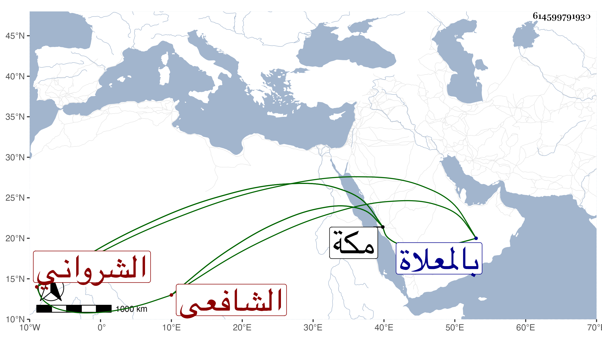

0902Sakhawi.DawLamic.ITO20230111-ara1.EIS1600.614599791930
Biography ID: 614599791930
299
عبد المحسن بن عبد الصمد بن لطف الله بن محمد بن حسن حميد الدين الشرواني الشافعي نزيل مكة . أخذ الفقه والنحو والمنطق عن خاله الصفي عبد المؤمن بن عبد الرحيم الشرواني ومما أخذه عنه الأنوار والحاوي وشرحه للقونوي والمحرر والمنطق أيضا وغيره عن الصلاح موسى الأردبيلي ثم الشرواني والمنطق أيضا مع الأصلين والتفسير والمعاني والبيان عن القوام محمد الكربالي ومما أخذه عنه الكشاف بل سمع عليه البخاري وأصول الدين كشرح المواقف والمعاني والبيان كشرح المفتاح للسيد والمطول مع الخلاصة في علوم الحديث للطيبي وغيرها عن المحيوي محمد الشيرازي وكذا أخذ البعض من المطول والمختصر ومن شرح الجغميني للسيد وجميع شمسية الحساب عن سلام الله الماضي في آخرين ، وبرع في فنون وقدم مكة فقطنها على طريقة جميلة وأخذ عنه الفضلاء كالنور عبيد الله بن العلاء بن عفيف الدين الأيجي وقريبه أصيل الدين ومعمر والشمس الزعيفريني وأثنوا على فضائله وديانته وسكونه وقد رأيته في مجاورتي الثالثة وكان كثير الانجماع والتوعك . مات في صفر سنة تسع وثمانين ودفن بالمعلاة وأظنه زاحم السبعين إن لم يكن جازها رحمه الله .
